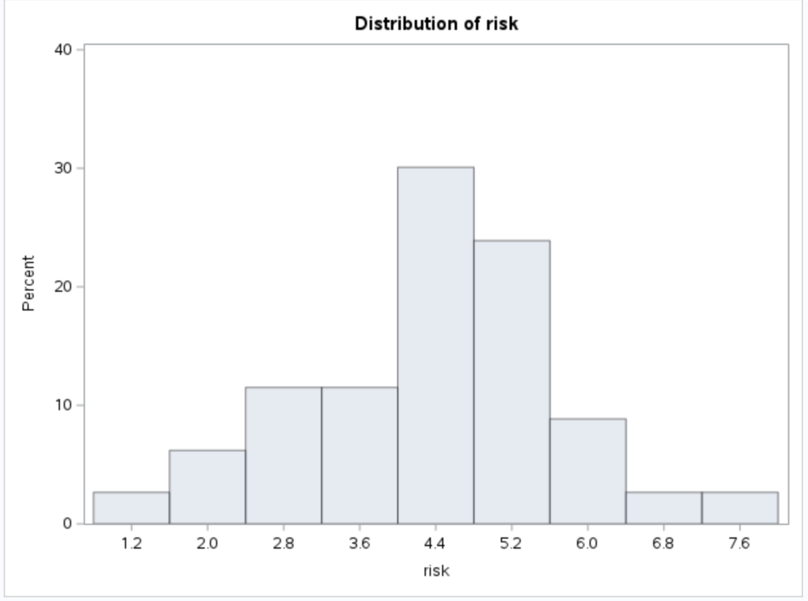

hw2
Problem 1
Answer:
\(SSR=\sum(\hat{Y}-\bar{Y})^2\)
Since \((\bar{X},\bar{Y})\) must be on the estimated regression line.
\(SSR=\sum(\hat{\beta_0}+\hat{\beta_1}X_i-\hat{\beta_0}-\hat{\beta_1}\bar{X})\)
\(SSR=\hat{\beta_1^2}\sum(X_i-\bar{X})^2\)
\(F=\frac{MSR}{MSE}=\frac{\frac{SSR}{1}}{\frac{SSE}{n-2}}=\frac{\hat{\beta_1^2}\sum(X_i-\bar{X})^2}{MSE}\)
\(SE(\hat{\beta_1})=\frac{\sqrt{MSE}}{\sqrt{\sum(X_i-\bar{X})^2}}\)
Hence:
\(F=\frac{\hat{\beta_1^2}}{SE(\hat{\beta_1})^2}=(\frac{\hat{\beta_1}}{SE(\hat{\beta_1})})^2=t^2\)
Problem 2
Note:
\(\hat{\beta_0}=\bar{Y}-\hat{\beta_1}\bar{X}\)
\(\hat{\beta_1}=\frac{\sum(X_i-\bar{X})(Y_i-\bar{Y})}{\sum(X_i-\bar{X})^2}\)
\(\hat{\sigma}^2=\frac{1}{n-2}\sum(Y_i-\bar{Y_i})^2\)
\(R^2=\frac{SSR}{SSTO}=\frac{\sum(\hat{Y_i}-\bar{Y})^2}{\sum(Y_i-\bar{Y})^2}\)
\(t=\frac{\hat{\beta_1}}{SE(\hat{\beta_1})}=\frac{\hat{\beta_1}\sqrt{\sum(X_i-\bar{X})^2}}{\hat{\sigma}}\)
(a) Answer:
Given \(x_i\) is replaced be \(cx_i\),
\(\hat{\beta_0^*}=\bar{Y}-\hat{\beta_1^*}(c\bar{X})=\hat{\beta_0}\)
\(\hat{\beta_1^*}=\frac{\sum(cX_i-c\bar{X})(Y_i-\bar{Y})}{\sum(cX_i-c\bar{X})^2}=\frac{c\sum(X_i-\bar{X})(Y_i-\bar{Y})}{c^2\sum(X_i-\bar{X})^2}=\frac{\sum(X_i-\bar{X})(Y_i-\bar{Y})}{c\sum(X_i-\bar{X})^2}=\frac{1}{c}\hat{\beta_1}\)
\(\hat{\sigma^*}^2=\frac{1}{n-2}\sum(Y_i-\bar{Y_i})^2=\hat{\sigma}^2\)
\(R^{*2}=\frac{\sum(\hat{Y_i^*}-\bar{Y})^2}{\sum(Y_i-\bar{Y})^2}=\frac{\sum(\hat{\beta_0^*}+\hat{\beta_1^*}cX_i-\bar{Y})^2}{\sum(Y_i-\bar{Y})^2}=\frac{\sum(\hat{\beta_0}+\frac{1}{c}\hat{\beta_1}cX_i-\bar{Y})^2}{\sum(Y_i-\bar{Y})^2}=R^{2}\)
\(t^*=\frac{\hat{\beta_1^*}\sqrt{\sum(cX_i-c\bar{X})^2}}{\hat{\sigma^*}}=\frac{\frac{1}{c}\hat{\beta_1}\sqrt{c^2\sum(X_i-\bar{X})^2}}{\hat{\sigma}}=\frac{\hat{\beta_1}\sqrt{\sum(X_i-\bar{X})^2}}{\hat{\sigma}}=t\)
In this linear transformation, the \(\hat{\beta_0}\), \(\hat{\sigma}^2\), \(t\)-statistic and \(R^2\) are invariant. The \(\hat{\beta_1}\) is scaled by \(\frac{1}{c}\).
(b) Answer:
Given \(x_i\) is replaced be \(x_i+d\),
\(\hat{\beta_0^*}=\bar{Y}-\hat{\beta_1^*}(\bar{X}+d)=\bar{Y}-\hat{\beta_1}(\bar{X}+d)=\bar{Y}-\hat{\beta_1}\bar{X}-\hat{\beta_1}d=\hat{\beta_0}-\hat{\beta_1}d\)
\(\hat{\beta_1^*}=\frac{\sum((X_i+d)-(\bar{X}+d))(Y_i-\bar{Y})}{\sum((X_i+d)-(\bar{X}+d))^2}=\frac{\sum(X_i-\bar{X})(Y_i-\bar{Y})}{\sum(X_i-\bar{X})^2}=\hat{\beta_1}\)
\(\hat{\sigma^*}^2=\frac{1}{n-2}\sum(Y_i-\bar{Y_i})^2=\hat{\sigma}^2\)
\(R^{*2}=\frac{\sum(\hat{Y_i^*}-\bar{Y})^2}{\sum(Y_i-\bar{Y})^2}=\frac{\sum(\hat{\beta_0^*}+\hat{\beta_1^*}(X_i+d)-\bar{Y})^2}{\sum(Y_i-\bar{Y})^2}=\frac{\sum(\hat{\beta_0^*}+\hat{\beta_1^*}X_i+\hat{\beta_1^*}d-\bar{Y})^2}{\sum(Y_i-\bar{Y})^2}=\frac{\sum(\hat{\beta_0}-\hat{\beta_1}d+\hat{\beta_1}X_i+\hat{\beta_1}d-\bar{Y})^2}{\sum(Y_i-\bar{Y})^2}=R^{2}\)
\(t^*=\frac{\hat{\beta_1^*}\sqrt{\sum((X_i+d)-(\bar{X}+d))^2}}{\hat{\sigma^*}}=\frac{\hat{\beta_1}\sqrt{\sum(X_i-\bar{X})^2}}{\hat{\sigma}}=t\)
In this linear transformation, the \(\hat{\beta_1}\), \(\hat{\sigma}^2\), \(t\)-statistic and \(R^2\) are invariant. The \(\hat{\beta_0}\) is shifted by \(-\hat{\beta_1}d\).
(c) Answer:
Given \(y_i\) is replaced be \(ky_i\),
\(\hat{\beta_0^*}=k\bar{Y}-\hat{\beta_1^*}\bar{X}=k\bar{Y}-k\hat{\beta_1}\bar{X}=k(\bar{Y}-\hat{\beta_1}\bar{X})=k\hat{\beta_0}\)
\(\hat{\beta_1^*}=\frac{\sum(X_i-\bar{X})(kY_i-k\bar{Y})}{\sum(X_i-\bar{X})^2}=\frac{k\sum(X_i-\bar{X})(Y_i-\bar{Y})}{\sum(X_i-\bar{X})^2}=k\hat{\beta_1}\)
\(\hat{\sigma^*}^2=\frac{1}{n-2}\sum(kY_i-k\bar{Y_i})^2=\frac{k^2}{n-2}\sum(Y_i-\bar{Y_i})^2=k^2\hat{\sigma}^2\)
\(R^{*2}=\frac{\sum(\hat{Y_i^*}-k\bar{Y})^2}{\sum(kY_i-k\bar{Y})^2}=\frac{\sum(\hat{\beta_0^*}+\hat{\beta_1^*}X_i-k\bar{Y})^2}{\sum(kY_i-k\bar{Y})^2}=\frac{\sum(k\hat{\beta_0}+k\hat{\beta_1}X_i-k\bar{Y})^2}{\sum(kY_i-k\bar{Y})^2}=\frac{k^2\sum(\hat{\beta_0}+\hat{\beta_1}X_i-\bar{Y})^2}{k^2\sum(Y_i-\bar{Y})^2}=R^2\)
\(t^*=\frac{\hat{\beta_1^*}\sqrt{\sum(X_i-\bar{X})^2}}{\hat{\sigma^*}}=\frac{k\hat{\beta_1}\sqrt{\sum(X_i-\bar{X})^2}}{k\hat{\sigma}}=\frac{\hat{\beta_1}\sqrt{\sum(X_i-\bar{X})^2}}{\hat{\sigma}}=t\)
In this linear transformation, \(\hat{\beta_0}\) and \(\hat{\beta_1}\) are both scaled by k, \(\hat{\sigma}^2\) is scaled by \(k^2\), \(t\)-statistic and \(R^2\) are invariant.
(d) Answer:
Given \(y_i\) is replaced be \(y_i+d\),
\(\hat{\beta_0^*}=\bar{Y}+d-\hat{\beta_1^*}\bar{X}=\bar{Y}+d-\hat{\beta_1}\bar{X}=\hat{\beta_0}+d\)
\(\hat{\beta_1^*}=\frac{\sum(X_i-\bar{X})(Y_i+d-\bar{Y}-d)}{\sum(X_i-\bar{X})^2}=\frac{\sum(X_i-\bar{X})(Y_i-\bar{Y})}{\sum(X_i-\bar{X})^2}=\hat{\beta_1}\)
\(\hat{\sigma^*}^2=\frac{1}{n-2}\sum(Y_i+d-\bar{Y_i}-d)^2=\frac{1}{n-2}\sum(Y_i-\bar{Y_i})^2=\hat{\sigma}^2\)
\(R^{*2}=\frac{\sum(\hat{Y_i^*}-\bar{Y}-d)^2}{\sum(Y_i+d-\bar{Y_i}-d)^2}=\frac{\sum(\hat{\beta_0^*}+\hat{\beta_1^*}X_i-\bar{Y}-d)^2}{\sum(Y_i-\bar{Y})^2}=\frac{\sum(\hat{\beta_0}+d+\hat{\beta_1}X_i-\bar{Y}-d)^2}{\sum(Y_i-\bar{Y})^2}=\frac{\sum(\hat{Y_i}-\bar{Y})^2}{\sum(Y_i-\bar{Y})^2}=R^2\)
\(t^*=\frac{\hat{\beta_1^*}\sqrt{\sum(Y_i+d-\bar{Y_i}-d)^2}}{\hat{\sigma^*}}=\frac{\hat{\beta_1}\sqrt{\sum(Y_i-\bar{Y})^2}}{\hat{\sigma}}=t\)
In this linear transformation, \(\hat{\beta_0}\) is shifted by \(d\), \(\hat{\beta_1}\), \(\hat{\sigma}^2\), \(t\)-statistic and \(R^2\) are invariant.
(e) Answer:
I will list the associated quantities below in order (\(\hat{\beta_0},\hat{\beta_1},\hat{\sigma}^2,R^2,t\))
Original scaling of variables: 75.92256, 0.53609, 19.372, 0.858, 20.42
a) Convert age in month to age in year: 75.92256, 6.43307, 19.372, 0.858, 20.42
b) Subtract mean age: 104.61972, 0.53609, 19.372, 0.858, 20.42
c) Convert height in cm to height in inches: 29.89077, 0.21106, 3.0027, 0.858, 20.42
d) Subtract mean height: -28.69716, 0.53609, 19.372, 0.858, 20.42
Each quantities after fitting model with transformation matches with my mathematical derivation in part a), b), c), d).
Problem 3

Answer:
Here are summary statistics generated in SAS:
Here are histograms for each variable:

By observing the summary statistics, the mean and median of each variable except “nurses” are close to each other, which indicates that the distribution of each variable is close to normal distribution. For variable “nurses”, the mean is greater than the median which means there are right skewness in the distribution. By observing the histograms, the distribution of each variable except “nurses” is close to normal distribution. The distribution of “nurses” is right skewed. The histograms verify our interpretation of summary statistics.
Here is scatter plot and fitted loess curves with different parameters for a) between Risk and nurses:
We set parameter to be 0.6 and here is the plot we used to examine residuals:
Here is the original residuals analysis to check the assumptions:
We can see residuals are more spread on left and more narrow to the right. Therefore, the constancy of error does not seem to meet. The linearity assumption is closely to meet. Residuals seem to distribute normally.
Since the loess curve is not showing a linear relationship between variables, we apply squared root transformation on x. Here is the updated scatter plot with fitted loess curve and residual analysis:
The plot after transformation still shows a non-linear relationship. Since we observe there is decreasing pattern at the end of original plot (before transformation), linear transformation might not be appropriate since data is not following a monotone pattern. However, it could also due to the fact that there are not enough data being collected on the right. Regarding the assumptions, the constancy of error seems to be verified after transformation. The linearity exist in the overall pattern. The distribution of residuals show normal pattern roughly.
Here is scatter plot and fitted loess curves with different parameters for b) between Risk and length:
We set parameter to be 0.6 and here is the plot we used to examine residuals:

Here is the original residuals analysis to check the assumptions:
The constancy of error seems to meet as we ignore the outlier. The linearity assumption is closely to meet. Residuals seem to distribute normally. If we remove the outliers as we observe in the scatter plot, it should show a linear regression relationship. Therefore, we do not need to transform variables.
Here is scatter plot and fitted loess curves with different parameters for c) between nurses and svcs:

We set parameter to be 0.6 and here is the plot we used to examine residuals:
Here is the original residuals analysis to check the assumptions:
The assumption of constant error is obviously violated. The linearity assumption is closely to meet. Residuals show normal distribution. Since the fitted loess curve is not showing an obvious linear relationship between variables. We apply log transformation on y. Here is the updated scatter plot with fitted loess curve and residual analysis:
Variables show a linear relationship after log transformation on nurses. Regarding assumptions, all assumptions seem to meet after this transformation.
Problem 4
(a) Answer:
\(\frac{\sum(X_i-\bar{X})(Y_i-\bar{Y})}{\sum(X_i-\bar{X})^2}=\frac{\sum(X_iY_i-X_i\bar{Y}-\bar{X}Y_i+\bar{X}\bar{Y})}{\sum(X_i-\bar{X})^2}\)
\(\frac{\sum(X_i-\bar{X})(Y_i-\bar{Y})}{\sum(X_i-\bar{X})^2}=\frac{\sum(X_iY_i-X_i\bar{Y}-\bar{X}Y_i)+n\frac{\sum{X_i}}{n}\bar{Y}}{\sum(X_i-\bar{X})^2}\)
\(\frac{\sum(X_i-\bar{X})(Y_i-\bar{Y})}{\sum(X_i-\bar{X})^2}=\frac{\sum(X_iY_i-X_i\bar{Y}-\bar{X}Y_i+X_i\bar{Y})}{\sum(X_i-\bar{X})^2}\)
\(\frac{\sum(X_i-\bar{X})(Y_i-\bar{Y})}{\sum(X_i-\bar{X})^2}=\frac{\sum(X_iY_i-\bar{X}Y_i)}{\sum(X_i-\bar{X})^2}\)
\(\frac{\sum(X_i-\bar{X})(Y_i-\bar{Y})}{\sum(X_i-\bar{X})^2}=\frac{\sum(X_i-\bar{X})Y_i}{\sum(X_i-\bar{X})^2}\)
(b) Answer:
Let \(c_i=\frac{X_i-\bar{X}}{\sum_{j=1}^{n}(X_j-\bar{X})^2}\)
\(Cov(\bar{Y},\hat{\beta_1})=Cov(\frac{1}{n}\sum{Y_i},\sum{c_iY_i})=\frac{1}{n}Cov(\sum{Y_i},\sum{c_iY_i})=\frac{1}{n}Cov(Y_1+Y_2+\dots+Y_n,c_1Y_1+c_2Y_2+\dots+c_nY_n)\)
Since \(Y_i\) are independent, \(Cov(Y_i,Y_j)=0\) for \(i\neq j\)
\(Cov(\bar{Y},\hat{\beta_1})=\frac{1}{n}(Cov(Y_1,c_1Y_1)+Cov(Y_2,c_2Y_2)+\dots+Cov(Y_n,c_nY_n))=\frac{1}{n}(\sum{c_iVar(Y_i)})=\frac{\sigma^2}{n}\sum{c_i}\)
Since \(\sum{c_i}=\frac{\sum(X_i-\bar{X})}{\sum_{j=1}^{n}(X_j-\bar{X})^2}=0\)
\(Cov(\bar{Y},\hat{\beta_1})=0\)